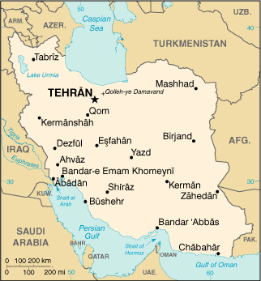

|
Iran | |
| Introduction Geography People Government Economy Communications Transportation Military Transnational Issues | ||
|  | ||
| Iran | Introduction | Top of Page |
| Background: | Known as Persia until 1935, Iran became an Islamic republic in 1979 after the ruling shah was forced into exile. Conservative clerical forces subsequently crushed westernizing liberal elements. Militant Iranian students seized the US Embassy in Tehran on 4 November 1979 and held it until 20 January 1981. During 1980-88, Iran fought a bloody, indecisive war with Iraq over disputed territory. The key current issue is how rapidly the country should open up to the modernizing influences of the outside world. |
| Iran | Geography | Top of Page |
| Location: | Middle East, bordering the Gulf of Oman, the Persian Gulf, and the Caspian Sea, between Iraq and Pakistan |
| Geographic coordinates: | 32 00 N, 53 00 E |
| Map references: | Middle East |
| Area: |
total:
1.648 million sq km
land: 1.636 million sq km water: 12,000 sq km |
| Area - comparative: | slightly larger than Alaska |
| Land boundaries: |
total:
5,440 km
border countries: Afghanistan 936 km, Armenia 35 km, Azerbaijan-proper 432 km, Azerbaijan-Naxcivan exclave 179 km, Iraq 1,458 km, Pakistan 909 km, Turkey 499 km, Turkmenistan 992 km |
| Coastline: | 2,440 km; note - Iran also borders the Caspian Sea (740 km) |
| Maritime claims: |
contiguous zone:
24 NM
continental shelf: natural prolongation exclusive economic zone: bilateral agreements or median lines in the Persian Gulf territorial sea: 12 NM |
| Climate: | mostly arid or semiarid, subtropical along Caspian coast |
| Terrain: | rugged, mountainous rim; high, central basin with deserts, mountains; small, discontinuous plains along both coasts |
| Elevation extremes: |
lowest point:
Caspian Sea -28 m
highest point: Qolleh-ye Damavand 5,671 m |
| Natural resources: | petroleum, natural gas, coal, chromium, copper, iron ore, lead, manganese, zinc, sulfur |
| Land use: |
arable land:
10%
permanent crops: 1% permanent pastures: 27% forests and woodland: 7% other: 55% (1993 est.) |
| Irrigated land: | 94,000 sq km (1993 est.) |
| Natural hazards: | periodic droughts, floods; dust storms, sandstorms; earthquakes along western border and in the northeast |
| Environment - current issues: | air pollution, especially in urban areas, from vehicle emissions, refinery operations, and industrial effluents; deforestation; overgrazing; desertification; oil pollution in the Persian Gulf; inadequate supplies of potable water |
| Environment - international agreements: |
party to:
Biodiversity, Climate Change, Desertification, Endangered Species, Hazardous Wastes, Marine Dumping, Nuclear Test Ban, Ozone Layer Protection, Wetlands
signed, but not ratified: Environmental Modification, Law of the Sea, Marine Life Conservation |
| Iran | People | Top of Page |
| Population: | 66,128,965 (July 2001 est.) |
| Age structure: |
0-14 years:
32.97% (male 11,150,053; female 10,654,884)
15-64 years: 62.38% (male 20,765,001; female 20,488,672) 65 years and over: 4.65% (male 1,617,045; female 1,453,310) (2001 est.) |
| Population growth rate: | 0.72% (2001 est.) |
| Birth rate: | 17.1 births/1,000 population (2001 est.) |
| Death rate: | 5.41 deaths/1,000 population (2001 est.) |
| Net migration rate: | -4.51 migrant(s)/1,000 population (2001 est.) |
| Sex ratio: |
at birth:
1.05 male(s)/female
under 15 years: 1.05 male(s)/female 15-64 years: 1.01 male(s)/female 65 years and over: 1.11 male(s)/female total population: 1.03 male(s)/female (2001 est.) |
| Infant mortality rate: | 29.04 deaths/1,000 live births (2001 est.) |
| Life expectancy at birth: |
total population:
69.95 years
male: 68.61 years female: 71.37 years (2001 est.) |
| Total fertility rate: | 2.02 children born/woman (2001 est.) |
| HIV/AIDS - adult prevalence rate: | less than 0.01% (1999 est.) |
| HIV/AIDS - people living with HIV/AIDS: | NA |
| HIV/AIDS - deaths: | NA |
| Nationality: |
noun:
Iranian(s)
adjective: Iranian |
| Ethnic groups: | Persian 51%, Azeri 24%, Gilaki and Mazandarani 8%, Kurd 7%, Arab 3%, Lur 2%, Baloch 2%, Turkmen 2%, other 1% |
| Religions: | Shi'a Muslim 89%, Sunni Muslim 10%, Zoroastrian, Jewish, Christian, and Baha'i 1% |
| Languages: | Persian and Persian dialects 58%, Turkic and Turkic dialects 26%, Kurdish 9%, Luri 2%, Balochi 1%, Arabic 1%, Turkish 1%, other 2% |
| Literacy: |
definition:
age 15 and over can read and write
total population: 72.1% male: 78.4% female: 65.8% (1994 est.) |
| Iran | Government | Top of Page |
| Country name: |
conventional long form:
Islamic Republic of Iran
conventional short form: Iran local long form: Jomhuri-ye Eslami-ye Iran local short form: Iran former: Persia |
| Government type: | theocratic republic |
| Capital: | Tehran |
| Administrative divisions: | 28 provinces (ostanha, singular - ostan); Ardabil, Azarbayjan-e Gharbi, Azarbayjan-e Sharqi, Bushehr, Chahar Mahall va Bakhtiari, Esfahan, Fars, Gilan, Golestan, Hamadan, Hormozgan, Ilam, Kerman, Kermanshah, Khorasan, Khuzestan, Kohgiluyeh va Buyer Ahmad, Kordestan, Lorestan, Markazi, Mazandaran, Qazvin, Qom, Semnan, Sistan va Baluchestan, Tehran, Yazd, Zanjan |
| Independence: | 1 April 1979 (Islamic Republic of Iran proclaimed) |
| National holiday: | Republic Day, 1 April (1979) |
| Constitution: | 2-3 December 1979; revised 1989 to expand powers of the presidency and eliminate the prime ministership |
| Legal system: | the Constitution codifies Islamic principles of government |
| Suffrage: | 15 years of age; universal |
| Executive branch: |
chief of state:
Leader of the Islamic Revolution Ayatollah Ali Hoseini-KHAMENEI (since 4 June 1989)
head of government: President (Ali) Mohammad KHATAMI-Ardakani (since 3 August 1997); First Vice President Dr. Mohammad Reza AREF-YAZDI (since NA August 2001) cabinet: Council of Ministers selected by the president with legislative approval elections: leader of the Islamic Revolution appointed for life by the Assembly of Experts; president elected by popular vote for a four-year term; election last held 8 June 2001 (next to be held NA 2005) election results: (Ali) Mohammad KHATAMI-Ardakani reelected president; percent of vote - (Ali) Mohammad KHATAMI-Ardakani 77% |
| Legislative branch: |
unicameral Islamic Consultative Assembly or Majles-e-Shura-ye-Eslami (290 seats, note - changed from 270 seats with the 18 February 2000 election; members elected by popular vote to serve four-year terms)
elections: last held 18 February-NA April 2000 (next to be held NA 2004) election results: percent of vote - NA%; seats by party - reformers 170, conservatives 45, and independents 10; 65 seats were up for runoff election on 5 May 2000 (reformers 52, conservatives 10, independents 3) |
| Judicial branch: | Supreme Court |
| Political parties and leaders: | the following organizations appeared to have achieved considerable success at elections to the sixth Majlis in early 2000: Assembly of the Followers of the Imam's Line, Freethinkers' Front, Islamic Iran Participation Front, Moderation and Development Party, Servants of Construction Party, Society of Self-sacrificing Devotees |
| Political pressure groups and leaders: | active student groups include the pro-reform "Organization for Strengthening Unity" and "the Union of Islamic Student Societies'; groups that generally support the Islamic Republic include Ansar-e Hizballah, Mojahedin of the Islamic Revolution, Muslim Students Following the Line of the Imam, and the Islamic Coalition Association; opposition groups include the Liberation Movement of Iran and the Nation of Iran party; armed political groups that have been almost completely repressed by the government include Mojahedin-e Khalq Organization (MEK), People's Fedayeen, Democratic Party of Iranian Kurdistan; the Society for the Defense of Freedom |
| International organization participation: | CCC, CP, ECO, ESCAP, FAO, G-19, G-24, G-77, IAEA, IBRD, ICAO, ICC, ICRM, IDA, IDB, IFAD, IFC, IFRCS, IHO, ILO, IMF, IMO, Inmarsat, Intelsat, Interpol, IOC, IOM (observer), ISO, ITU, NAM, OIC, OPCW, OPEC, PCA, UN, UNCTAD, UNESCO, UNHCR, UNIDO, UPU, WCL, WFTU, WHO, WMO, WToO |
| Diplomatic representation in the US: | none; note - Iran has an Interests Section in the Pakistani Embassy; address: Iranian Interests Section, Pakistani Embassy, 2209 Wisconsin Avenue NW, Washington, DC 20007; telephone: [1] (202) 965-4990 |
| Diplomatic representation from the US: | none; note - protecting power in Iran is Switzerland |
| Flag description: | three equal horizontal bands of green (top), white, and red; the national emblem (a stylized representation of the word Allah) in red is centered in the white band; ALLAH AKBAR (God is Great) in white Arabic script is repeated 11 times along the bottom edge of the green band and 11 times along the top edge of the red band |
| Iran | Economy | Top of Page |
| Economy - overview: | Iran's economy is a mixture of central planning, state ownership of oil and other large enterprises, village agriculture, and small-scale private trading and service ventures. President KHATAMI has continued to follow the market reform plans of former President RAFSANJANI and has indicated that he will pursue diversification of Iran's oil-reliant economy although he has made little progress toward that goal. The strong oil market in 1996 helped ease financial pressures on Iran and allowed for Tehran's timely debt service payments. Iran's financial situation tightened in 1997 and deteriorated further in 1998 because of lower oil prices. The subsequent zoom in oil prices in 1999-2000 afforded Iran fiscal breathing room but does not solve Iran's structural economic problems, including the encouragement of foreign investment. |
| GDP: | purchasing power parity - $413 billion (2000 est.) |
| GDP - real growth rate: | 3% (2000 est.) |
| GDP - per capita: | purchasing power parity - $6,300 (2000 est.) |
| GDP - composition by sector: |
agriculture:
24%
industry: 28% services: 48% (2000 est.) |
| Population below poverty line: | 53% (1996 est.) |
| Household income or consumption by percentage share: |
lowest 10%:
NA%
highest 10%: NA% |
| Inflation rate (consumer prices): | 16% (2000 est.) |
| Labor force: |
17.3 million
note: shortage of skilled labor (1998) |
| Labor force - by occupation: | agriculture 33%, industry 25%, services 42% (1999 est.) |
| Unemployment rate: | 14% (1999 est.) |
| Budget: |
revenues:
$27 billion
expenditures: $27 billion, including capital expenditures of $NA (1999) |
| Industries: | petroleum, petrochemicals, textiles, cement and other construction materials, food processing (particularly sugar refining and vegetable oil production), metal fabricating, armaments |
| Industrial production growth rate: | 4.4% (nonoil) (1999) |
| Electricity - production: | 103.054 billion kWh (1999) |
| Electricity - production by source: |
fossil fuel:
93.16%
hydro: 6.84% nuclear: 0% other: 0% (1999) |
| Electricity - consumption: | 95.84 billion kWh (1999) |
| Electricity - exports: | 0 kWh (1999) |
| Electricity - imports: | 0 kWh (1999) |
| Agriculture - products: | wheat, rice, other grains, sugar beets, fruits, nuts, cotton; dairy products, wool; caviar |
| Exports: | $25 billion (f.o.b., 2000 est.) |
| Exports - commodities: | petroleum 85%, carpets, fruits and nuts, iron and steel, chemicals |
| Exports - partners: | Japan, Italy, UAE, South Korea, France, China |
| Imports: | $15 billion (f.o.b., 2000 est.) |
| Imports - commodities: | industrial raw materials and intermediate goods, capital goods, foodstuffs and other consumer goods, technical services, military supplies |
| Imports - partners: | Germany, South Korea, Italy, UAE, France, Japan |
| Debt - external: | $7.5 billion (2000 est.) |
| Economic aid - recipient: | $116.5 million (1995) |
| Currency: | Iranian rial (IRR) |
| Currency code: | IRR |
| Exchange rates: |
Iranian rials per US dollar - 1,754.71 (January 2001), 1,764.43 (2000), 1,725.93 (1999), 1,751.86 (1998), 1,752.92 (1997), 1,750.76 (1996)
note: Iran has three officially recognized exchange rates; the averages for 1999 are as follows: the official floating rate of 1,750 rials per US dollar, the "export" rate of 3,000 rials per US dollar, and the variable Tehran Stock Exchange rate, which averages 7,863 rials per US dollar; the market rate averages 8,615 rials per US dollar |
| Fiscal year: | 21 March - 20 March |
| Iran | Communications | Top of Page |
| Telephones - main lines in use: | 6.313 million (1997) |
| Telephones - mobile cellular: | 265,000 (August 1998) |
| Telephone system: |
general assessment:
inadequate but currently being modernized and expanded with the goal of not only improving the efficiency and increasing the volume of the urban service but also bringing telephone service to several thousand villages, not presently connected
domestic: as a result of heavy investing in the telephone system since 1994, the number of long-distance channels in the microwave radio relay trunk has grown substantially; many villages have been brought into the net; the number of main lines in the urban systems has approximately doubled; and thousands of mobile cellular subscribers are being served; moreover, the technical level of the system has been raised by the installation of thousands of digital switches international: HF radio and microwave radio relay to Turkey, Azerbaijan, Pakistan, Afghanistan, Turkmenistan, Syria, Kuwait, Tajikistan, and Uzbekistan; submarine fiber-optic cable to UAE with access to Fiber-Optic Link Around the Globe (FLAG); Trans-Asia-Europe (TAE) fiber-optic line runs from Azerbaijan through the northern portion of Iran to Turkmenistan with expansion to Georgia and Azerbaijan; satellite earth stations - 9 Intelsat and 4 Inmarsat; Internet service available but limited to electronic mail to promote Iranian culture |
| Radio broadcast stations: | AM 72, FM 5, shortwave 5 (1998) |
| Radios: | 17 million (1997) |
| Television broadcast stations: | 28 (plus 450 low-power repeaters) (1997) |
| Televisions: | 4.61 million (1997) |
| Internet country code: | .ir |
| Internet Service Providers (ISPs): | 8 (2000) |
| Internet users: | 100,000 (2000) |
| Iran | Transportation | Top of Page |
| Railways: |
total:
5,600 km
broad gauge: 94 km 1.676-m gauge standard gauge: 5,506 km 1.435-m gauge (146 km electrified) note: broad gauge track is employed at the borders with Azerbaijan and Turkmenistan which have broad-gauge rail systems (2001) |
| Highways: |
total:
140,200 km
paved: 49,440 km (including 470 km of expressways) unpaved: 90,760 km (1998 est.) |
| Waterways: |
904 km
note: the Shatt al Arab is usually navigable by maritime traffic for about 130 km; channel has been dredged to 3 m and is in use |
| Pipelines: | crude oil 5,900 km; petroleum products 3,900 km; natural gas 4,550 km |
| Ports and harbors: | Abadan (largely destroyed in fighting during 1980-88 war), Ahvaz, Bandar 'Abbas, Bandar-e Anzali, Bushehr, Bandar-e Emam Khomeyni, Bandar-e Lengeh, Bandar-e Mahshahr, Bandar-e Torkaman, Chabahar (Bandar Beheshti), Jazireh-ye Khark, Jazireh-ye Lavan, Jazireh-ye Sirri, Khorramshahr (limited operation since November 1992), Now Shahr |
| Merchant marine: |
total:
152 ships (1,000 GRT or over) totaling 4,097,977 GRT/7,131,688 DWT
ships by type: bulk 49, cargo 38, chemical tanker 4, combination bulk 1, container 10, liquefied gas 1, multi-functional large-load carrier 6, petroleum tanker 32, refrigerated cargo 1, roll on/roll off 9, short-sea passenger 1 note: includes some foreign-owned ships registered here as a flag of convenience: Singapore 1 (2000 est.) |
| Airports: | 317 (2000 est.) |
| Airports - with paved runways: |
total:
117
over 3,047 m: 38 2,438 to 3,047 m: 23 1,524 to 2,437 m: 25 914 to 1,523 m: 24 under 914 m: 7 (2000 est.) |
| Airports - with unpaved runways: |
total:
200
over 3,047 m: 2 2,438 to 3,047 m: 3 1,524 to 2,437 m: 13 914 to 1,523 m: 122 under 914 m: 60 (2000 est.) |
| Heliports: | 11 (2000 est.) |
| Iran | Military | Top of Page |
| Military branches: | Islamic Republic of Iran regular forces (includes Ground Forces, Navy, Air and Air Defense Forces), Revolutionary Guards (includes Ground, Air, Navy, Qods, and Basij-mobilization-forces), Law Enforcement Forces |
| Military manpower - military age: | 21 years of age |
| Military manpower - availability: | males age 15-49: 18,319,328 (2001 est.) |
| Military manpower - fit for military service: | males age 15-49: 10,872,407 (2001 est.) |
| Military manpower - reaching military age annually: | males: 823,040 (2001 est.) |
| Military expenditures - dollar figure: | $5.787 billion (FY98/99) |
| Military expenditures - percent of GDP: | 2.9% (FY98/99) |
| Iran | Transnational Issues | Top of Page |
| Disputes - international: | Iran and Iraq restored diplomatic relations in 1990 but are still trying to work out written agreements settling outstanding disputes from their eight-year war concerning border demarcation, prisoners-of-war, and freedom of navigation and sovereignty over the Shatt al Arab waterway; Iran occupies two islands in the Persian Gulf claimed by the UAE: Lesser Tunb (called Tunb as Sughra in Arabic by UAE and Jazireh-ye Tonb-e Kuchek in Persian by Iran) and Greater Tunb (called Tunb al Kubra in Arabic by UAE and Jazireh-ye Tonb-e Bozorg in Persian by Iran); Iran jointly administers with the UAE an island in the Persian Gulf claimed by the UAE (called Abu Musa in Arabic by UAE and Jazireh-ye Abu Musa in Persian by Iran) - over which Iran has taken steps to exert unilateral control since 1992, including access restrictions and a military build-up on the island; the UAE has garnered significant diplomatic support in the region in protesting these Iranian actions; Caspian Sea boundaries are not yet determined among Azerbaijan, Iran, Kazakhstan, Russia, and Turkmenistan |
| Illicit drugs: | despite substantial interdiction efforts, Iran remains a key transshipment point for Southwest Asian heroin to Europe; domestic consumption of narcotics remains a persistent problem and Iranian press reports estimate that there are at least 1.2 million drug users in the country |
{kind=link}